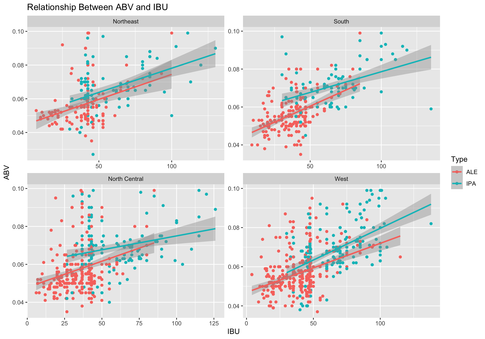
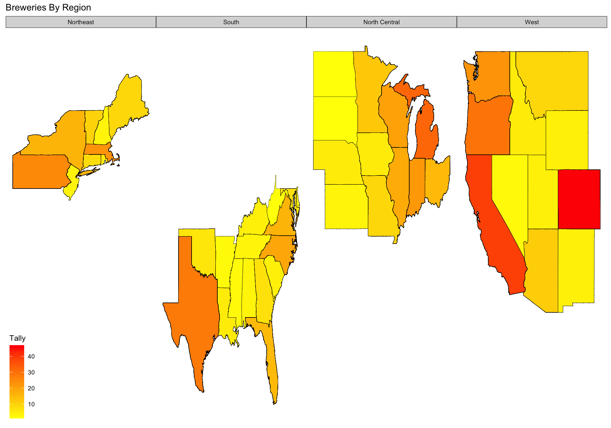

Craft Beer Breweries
Pearly Paul and Kevin Albright
6/21/2021
Introduction
In the below report, we have been provided two data sets for various beers and the breweries that produce them in the US. Our team had to do an exploratory Data Analysis on the data provided to come up with useful insights. We were provided with two separate data sets, one with details of the beers and and the other with the details of the breweries around the USA. To analyze this ## Reproducible Research in R Please begin by reading the the README.md.All the details on the structure of project has been documented. ### Loading Packages for Analysis Below are the packages required for the analysis of the Craft Beer and Brewery study.
Loading the Datasets for Analysis
We were provided with 2 data sets (beers and breweries). The breweries dataset contains the count of breweries from 50 states of the US and the beer data set contains the details of the beers (Alcohol by Volume Content and International Bitterness unit) Note : Beers dataset contains a list of 2410 US craft beers and Breweries dataset contains 558 US breweries. Region Data : This is the data set we created for analysis group the 50 states in US into 4 regions North Central,North East , South and West
#Read in Core Data
Beers = read.csv("/Users/Kevin/Desktop/School/Doing Data Science/Project 1/Beers.csv", header = TRUE)
Breweries = read.csv("/Users/Kevin/Desktop/School/Doing Data Science/Project 1/Breweries.csv", header = TRUE)
#Bring in Region Data
RegionData = data.frame(State = state.abb, Region = state.region)
Breweries = left_join(Breweries,RegionData,by = "State")
#Handle NA and missing data by replacing with Regional Means
Breweries = sqldf('
select
"Brew_ID","Name","City","State",
case when "State" = "DC" then "South" else "Region" end as Region
from
Breweries
')
Distilled_Data = merge(Beers,Breweries, by.x = "Brewery_id", by.y = "Brew_ID")
#Distilled_Data = left_join(Beers,Distilled_Data,by = "Beer_ID")
#Create table for IBU and ABV means by State and Region - excluding missing data
State_Means =
Distilled_Data[!is.na(Distilled_Data$ABV) & !is.na(Distilled_Data$IBU),] %>%
group_by(State) %>%
summarize(Mean_IBU_by_State = mean(IBU),
Mean_ABV_by_State = mean(ABV))
Regional_Means =
Distilled_Data[!is.na(Distilled_Data$ABV) & !is.na(Distilled_Data$IBU),] %>%
group_by(Region) %>%
summarize(Mean_IBU_by_Region = mean(IBU),
Mean_ABV_by_Region = mean(ABV))
Distilled_Data = left_join(Distilled_Data,State_Means,by = "State")
Distilled_Data = left_join(Distilled_Data,Regional_Means,by = "Region")3. Research Questions
We are now going to analyze the research questions for EDA ### 1. How many breweries are present in each state? Here we used the breweries dataset to count the number of breweries per state in the US. Output : We were able to find Colorado and California to have the highest number of Craft breweries in US.
kable(count(Breweries,State)) | State | n |
|---|---|
| AK | 7 |
| AL | 3 |
| AR | 2 |
| AZ | 11 |
| CA | 39 |
| CO | 47 |
| CT | 8 |
| DC | 1 |
| DE | 2 |
| FL | 15 |
| GA | 7 |
| HI | 4 |
| IA | 5 |
| ID | 5 |
| IL | 18 |
| IN | 22 |
| KS | 3 |
| KY | 4 |
| LA | 5 |
| MA | 23 |
| MD | 7 |
| ME | 9 |
| MI | 32 |
| MN | 12 |
| MO | 9 |
| MS | 2 |
| MT | 9 |
| NC | 19 |
| ND | 1 |
| NE | 5 |
| NH | 3 |
| NJ | 3 |
| NM | 4 |
| NV | 2 |
| NY | 16 |
| OH | 15 |
| OK | 6 |
| OR | 29 |
| PA | 25 |
| RI | 5 |
| SC | 4 |
| SD | 1 |
| TN | 3 |
| TX | 28 |
| UT | 4 |
| VA | 16 |
| VT | 10 |
| WA | 23 |
| WI | 20 |
| WV | 1 |
| WY | 4 |
#Brewery Count by State
Breweries %>%
group_by(State,Region) %>%
summarize(Count = n()) %>%
ggplot(aes(x = reorder(State,-Count), y = Count,fill=Region)) +
geom_bar(stat = "identity") +
geom_text(aes(label=Count),vjust=1) +
ggtitle("Brewery Count by State",) + xlab("State") + ylab("Count") +
facet_wrap(~Region, scales="free") +
theme(plot.title=element_text(hjust=.5)) ## `summarise()` has grouped output by 'State'. You can override using the `.groups` argument. ## 2. Merge beer data with the breweries data. Print the first 6 observations and the last six observations to check the merged file. Here we merged the both the data sets into a single data set
## 2. Merge beer data with the breweries data. Print the first 6 observations and the last six observations to check the merged file. Here we merged the both the data sets into a single data set Distilled_Data. By which we can find the beers made in by each state in United States. The Brewery_id column name in the Beers data was changed to Brew_id for merging both data sets #Address missing data and Plot Median ABV and Bitterness
kable(head(Distilled_Data))| Brewery_id | Name.x | Beer_ID | ABV | IBU | Style | Ounces | Name.y | City | State | Region | Mean_IBU_by_State | Mean_ABV_by_State | Mean_IBU_by_Region | Mean_ABV_by_Region |
|---|---|---|---|---|---|---|---|---|---|---|---|---|---|---|
| 1 | Get Together | 2692 | 0.045 | 50 | American IPA | 16 | NorthGate Brewing | Minneapolis | MN | North Central | 49.95652 | 0.0604348 | 39.19035 | 0.059126 |
| 1 | Maggie’s Leap | 2691 | 0.049 | 26 | Milk / Sweet Stout | 16 | NorthGate Brewing | Minneapolis | MN | North Central | 49.95652 | 0.0604348 | 39.19035 | 0.059126 |
| 1 | Wall’s End | 2690 | 0.048 | 19 | English Brown Ale | 16 | NorthGate Brewing | Minneapolis | MN | North Central | 49.95652 | 0.0604348 | 39.19035 | 0.059126 |
| 1 | Pumpion | 2689 | 0.060 | 38 | Pumpkin Ale | 16 | NorthGate Brewing | Minneapolis | MN | North Central | 49.95652 | 0.0604348 | 39.19035 | 0.059126 |
| 1 | Stronghold | 2688 | 0.060 | 25 | American Porter | 16 | NorthGate Brewing | Minneapolis | MN | North Central | 49.95652 | 0.0604348 | 39.19035 | 0.059126 |
| 1 | Parapet ESB | 2687 | 0.056 | 47 | Extra Special / Strong Bitter (ESB) | 16 | NorthGate Brewing | Minneapolis | MN | North Central | 49.95652 | 0.0604348 | 39.19035 | 0.059126 |
kable(tail(Distilled_Data))| Brewery_id | Name.x | Beer_ID | ABV | IBU | Style | Ounces | Name.y | City | State | Region | Mean_IBU_by_State | Mean_ABV_by_State | Mean_IBU_by_Region | Mean_ABV_by_Region | |
|---|---|---|---|---|---|---|---|---|---|---|---|---|---|---|---|
| 2405 | 556 | Pilsner Ukiah | 98 | 0.055 | NA | German Pilsener | 12 | Ukiah Brewing Company | Ukiah | CA | West | 46.28148 | 0.0628889 | 45.52468 | 0.0607569 |
| 2406 | 557 | Heinnieweisse Weissebier | 52 | 0.049 | NA | Hefeweizen | 12 | Butternuts Beer and Ale | Garrattsville | NY | Northeast | 46.00000 | 0.0604565 | 41.57843 | 0.0585980 |
| 2407 | 557 | Snapperhead IPA | 51 | 0.068 | NA | American IPA | 12 | Butternuts Beer and Ale | Garrattsville | NY | Northeast | 46.00000 | 0.0604565 | 41.57843 | 0.0585980 |
| 2408 | 557 | Moo Thunder Stout | 50 | 0.049 | NA | Milk / Sweet Stout | 12 | Butternuts Beer and Ale | Garrattsville | NY | Northeast | 46.00000 | 0.0604565 | 41.57843 | 0.0585980 |
| 2409 | 557 | Porkslap Pale Ale | 49 | 0.043 | NA | American Pale Ale (APA) | 12 | Butternuts Beer and Ale | Garrattsville | NY | Northeast | 46.00000 | 0.0604565 | 41.57843 | 0.0585980 |
| 2410 | 558 | Urban Wilderness Pale Ale | 30 | 0.049 | NA | English Pale Ale | 12 | Sleeping Lady Brewing Company | Anchorage | AK | West | 40.88235 | 0.0561765 | 45.52468 | 0.0607569 |
write.csv(Distilled_Data,"/Users/Kevin/Desktop/School/Doing Data Science/Project 1/Distilled_Data.csv")
write.csv(RegionData,"/Users/Kevin/Desktop/School/Doing Data Science/Project 1/Region_Data.csv")3.Address the missing values in each column.
To proceed with data analysis we first inspected both the datasets for any missing value. 1.Beer Data set : + International Bitterness Unit : Out of the 2410 beers - 1405 beers were missing IBU value + Alcohol By Volume : Out of the 2410 beers - 62 beers were missing ABV content value
2.Breweries Data set : + No missing data
To deal with this anomaly and unbiased data analysis we populated the missing values in the Beer Data. We populated the missing values with the mean of respective Region/State.
Distilled_Data2 = Distilled_Data
Distilled_Data2 =
Distilled_Data2 %>%
mutate(ABV = coalesce(Distilled_Data2$ABV,Distilled_Data2$Mean_ABV_by_State),
IBU = coalesce(coalesce(Distilled_Data2$IBU,Distilled_Data2$Mean_IBU_by_State),Distilled_Data2$Mean_IBU_by_Region))4.Compute the median alcohol content and international bitterness unit for each state. Plot a bar chart to compare.
Calculation of the median Alcohol content of each state grouped by region ### +4a. Median Alcohol Content - After plotting we discovered that the state with the highest median ABV was Kentucky with an ABV of .064 hailing from the Southern Region. The median bitterness was highest in West Virginia again from the Southern Region.
#Median ABV
Distilled_Data2 %>%
group_by(State,Region) %>%
summarize(
Median_Alcohol_Content = round(median(ABV,na.rm=TRUE),digits=5),
Median_Bitterness = median(IBU,na.rm=TRUE)
) %>%
ggplot(aes(reorder(x = State,Median_Alcohol_Content), y = Median_Alcohol_Content,fill=Region)) + geom_bar(stat="identity") +
xlab("State") + ylab("ABV") + ggtitle("Median ABV by State") + facet_wrap(~Region, scales="free") +
geom_text(aes(label=round(Median_Alcohol_Content,digits=6)),hjust=1) +
coord_flip()## `summarise()` has grouped output by 'State'. You can override using the `.groups` argument.
#Median Bitterness
Distilled_Data2 %>%
group_by(State,Region) %>%
summarize(
Median_Bitterness = median(IBU,na.rm=TRUE),
Median_Alcohol_Content = median(ABV,na.rm=TRUE)
) %>%
ggplot(aes(reorder(x = State,Median_Bitterness), y = Median_Bitterness,fill=Region)) + geom_bar(stat="identity") +
xlab("State") + ylab("Bitterness") + ggtitle("Median Bitterness by State") + coord_flip() +
geom_text(aes(label=round(Median_Bitterness,digits=2)),hjust=1) +
facet_wrap(~Region, scales="free") ## `summarise()` has grouped output by 'State'. You can override using the `.groups` argument. ## 5.Which state has the maximum alcoholic (ABV) beer? Which state has the most bitter (IBU) beer? ### 5a. Most Alcoholic Beer in US ### Observation : Upon analysis the beer with maximum alcohol is made in the
## 5.Which state has the maximum alcoholic (ABV) beer? Which state has the most bitter (IBU) beer? ### 5a. Most Alcoholic Beer in US ### Observation : Upon analysis the beer with maximum alcohol is made in the Lee Hill Series Vol.5 made in Colorado West
5b. Most Bitter Beer in US
Observation : Upon analysis the beer with maximum bitter content is Bitter Bitch Imperial IPA made in Oregano in West Region
Top_ABV = Distilled_Data2[order(-Distilled_Data2$ABV),]
kable(head(Top_ABV,1)) | Brewery_id | Name.x | Beer_ID | ABV | IBU | Style | Ounces | Name.y | City | State | Region | Mean_IBU_by_State | Mean_ABV_by_State | Mean_IBU_by_Region | Mean_ABV_by_Region | |
|---|---|---|---|---|---|---|---|---|---|---|---|---|---|---|---|
| 375 | 52 | Lee Hill Series Vol. 5 - Belgian Style Quadrupel Ale | 2565 | 0.128 | 47.43151 | Quadrupel (Quad) | 19.2 | Upslope Brewing Company | Boulder | CO | West | 47.43151 | 0.0648356 | 45.52468 | 0.0607569 |
Most_Bitter = Distilled_Data2[order(-Distilled_Data2$IBU),]
kable(head(Most_Bitter,1))| Brewery_id | Name.x | Beer_ID | ABV | IBU | Style | Ounces | Name.y | City | State | Region | Mean_IBU_by_State | Mean_ABV_by_State | Mean_IBU_by_Region | Mean_ABV_by_Region | |
|---|---|---|---|---|---|---|---|---|---|---|---|---|---|---|---|
| 1857 | 375 | Bitter Bitch Imperial IPA | 980 | 0.082 | 138 | American Double / Imperial IPA | 12 | Astoria Brewing Company | Astoria | OR | West | 47.94253 | 0.0567011 | 45.52468 | 0.0607569 |
Observation : First we had to filter the data set to only ALE and IPA beers then plot the relationship by region.
#Relationship Between IBU and ABV by Type
IPA_ALE = sqldf('
select
"Name","Style" as Style,"ABV","IBU","State","Region","City",
case when "Style" like "%ALE%" then "ALE"
when "Style" like "%IPA%" then "IPA" end as Type
from
Distilled_Data2
where
"Style" like "%ALE%" OR "Style" like "%IPA%"
')
IPA_ALE %>% ggplot(aes(x=IBU, y=ABV,color=Type)) + geom_point() + geom_smooth(method="lm") +
ggtitle("Relationship Between ABV and IBU") +
facet_wrap(~Region,scales="free")## `geom_smooth()` using formula 'y ~ x' ### 8b. Use KNN to differentiate the beer from ALE or IPA Beer ## Observation : Found optimal K in order to produce the most accurate KNN model. When k = 5 we were able to formulate an 84% accuracy using the variables ABV and IBU
splitPerc = .70
trainBeer = sample(1:dim(IPA_ALE)[1],round(splitPerc * dim(IPA_ALE)[1]))
train = IPA_ALE[trainBeer,]
test = IPA_ALE[-trainBeer,]
accs = data.frame(accuracy = numeric(90), k = numeric(90))
for(i in 1:90)
{
classifications = knn(train[,c(3,4)],test[,c(3,4)],train$Type, prob = TRUE, k = i)
table(test$Type,classifications)
CM = confusionMatrix(table(test$Type,classifications))
accs$accuracy[i] = CM$overall[1]
accs$k[i] = i
}
plot(accs$k,accs$accuracy, type = "l", xlab = "k")
abline(v=accs$k[which.max(accs$accuracy)], col="red")
accs$k[which.max(accs$accuracy)]## [1] 26splitPerc = .70
trainIndices = sample(1:dim(IPA_ALE)[1],round(splitPerc * dim(IPA_ALE)[1]))
train = IPA_ALE[trainIndices,]
test = IPA_ALE[-trainIndices,]
classification = knn(IPA_ALE[,c(3,4)],IPA_ALE[,c(3,4)],IPA_ALE$Type,prob = TRUE, k = 5)
table(classification,IPA_ALE$Type)##
## classification ALE IPA
## ALE 920 148
## IPA 100 410confusionMatrix(table(classification,IPA_ALE$Type))## Confusion Matrix and Statistics
##
##
## classification ALE IPA
## ALE 920 148
## IPA 100 410
##
## Accuracy : 0.8428
## 95% CI : (0.8239, 0.8605)
## No Information Rate : 0.6464
## P-Value [Acc > NIR] : < 2e-16
##
## Kappa : 0.6494
##
## Mcnemar's Test P-Value : 0.00284
##
## Sensitivity : 0.9020
## Specificity : 0.7348
## Pos Pred Value : 0.8614
## Neg Pred Value : 0.8039
## Prevalence : 0.6464
## Detection Rate : 0.5830
## Detection Prevalence : 0.6768
## Balanced Accuracy : 0.8184
##
## 'Positive' Class : ALE
## #Additional Insight on Craft beer’s and breweries ## Observation : We found that the southern and western regions consume alcohol with higher bitterness and the northeast and northern regions prefer a less alcoholic content in their beer. The geographipal map of US shows the state groupings by regions.
map_data = map_data('state')
map_data = map_data %>% mutate(State = state2abbr(map_data$region))
Final_Breweries = left_join(Breweries,map_data, by = 'State')
Count_Breweries = Breweries %>%
group_by(State) %>%
summarize(Tally = n())
New_Breweries = left_join(Final_Breweries,Count_Breweries,by = 'State')
p0 <- ggplot(data = New_Breweries,
mapping = aes(x = long, y = lat,
group = group,fill=Tally))
p1 <- p0 + geom_polygon(color = "black", size = 0.1) +
theme_map() +
scale_fill_gradient2(low = "green",
mid = "yellow",
high = "red") +
ggtitle("Breweries By Region") +
facet_grid(~Region, scales="free")
p1 
6. Comment on the summary statistics and distribution of the ABV variable.
Observation : The chart shows a right tailed distribution with the majority of alcohol content hovering between .05 and .06
## Observation : We observed a positive linear correlation between ABV and IBU. Overall, as the bitterness increased so did the alcohol content.
8. Use KNN to differentiate the beer from Ale or IPA Beer